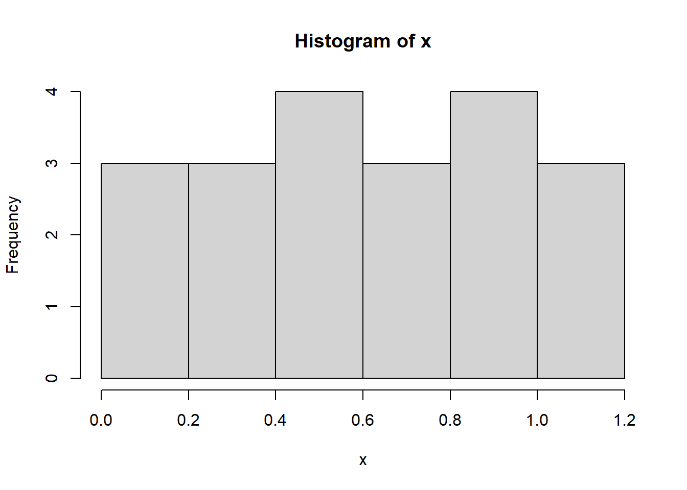
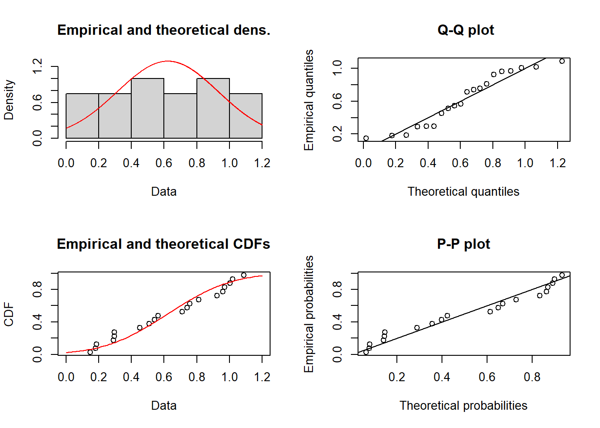
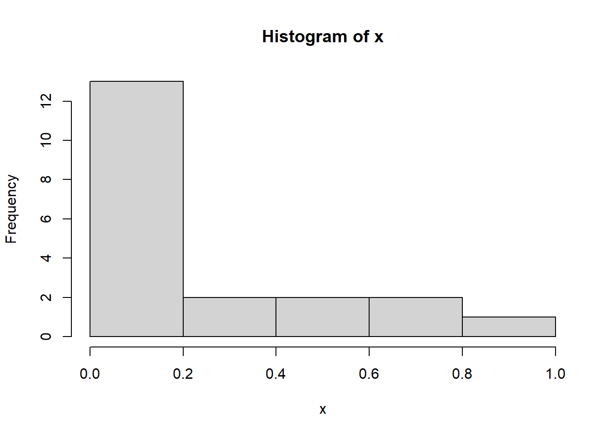
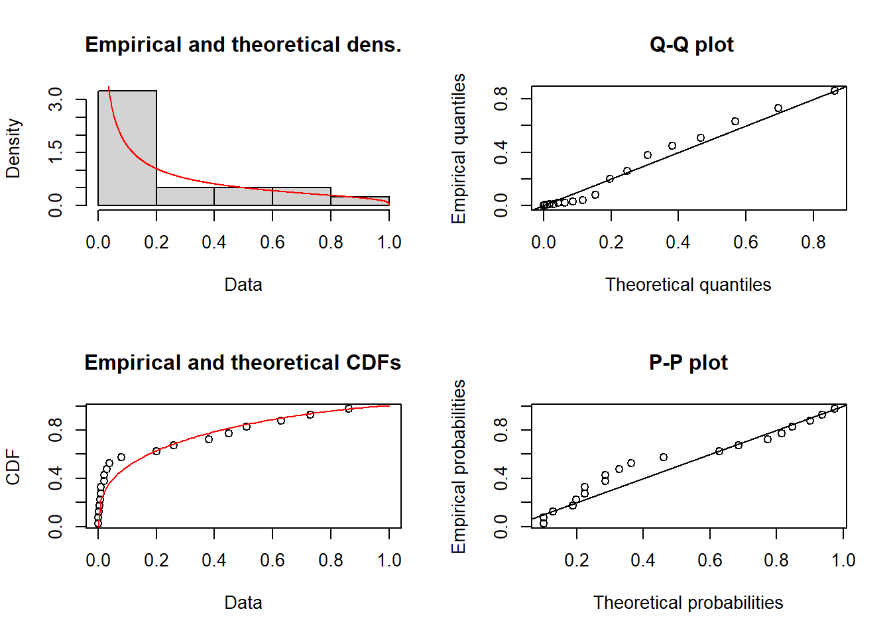
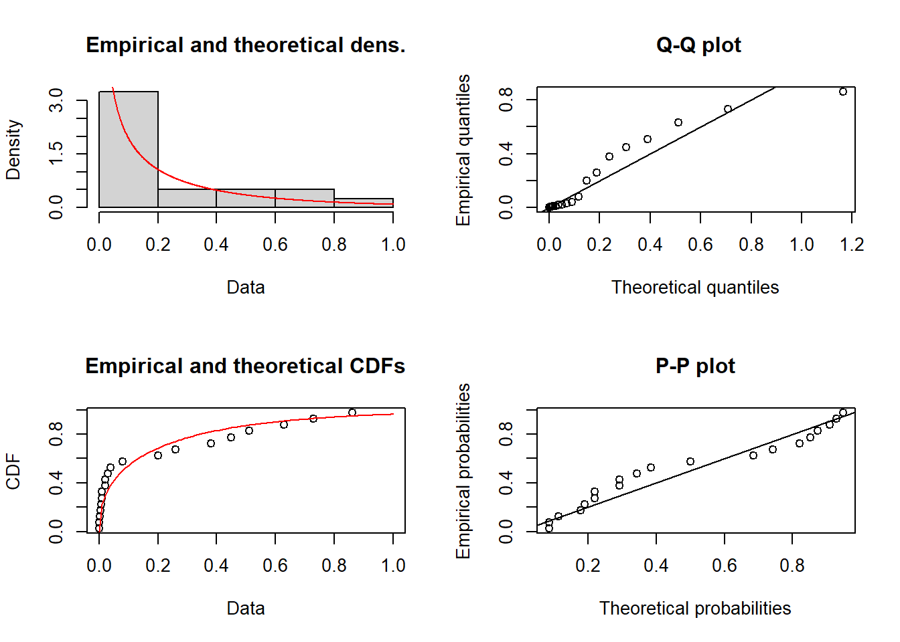
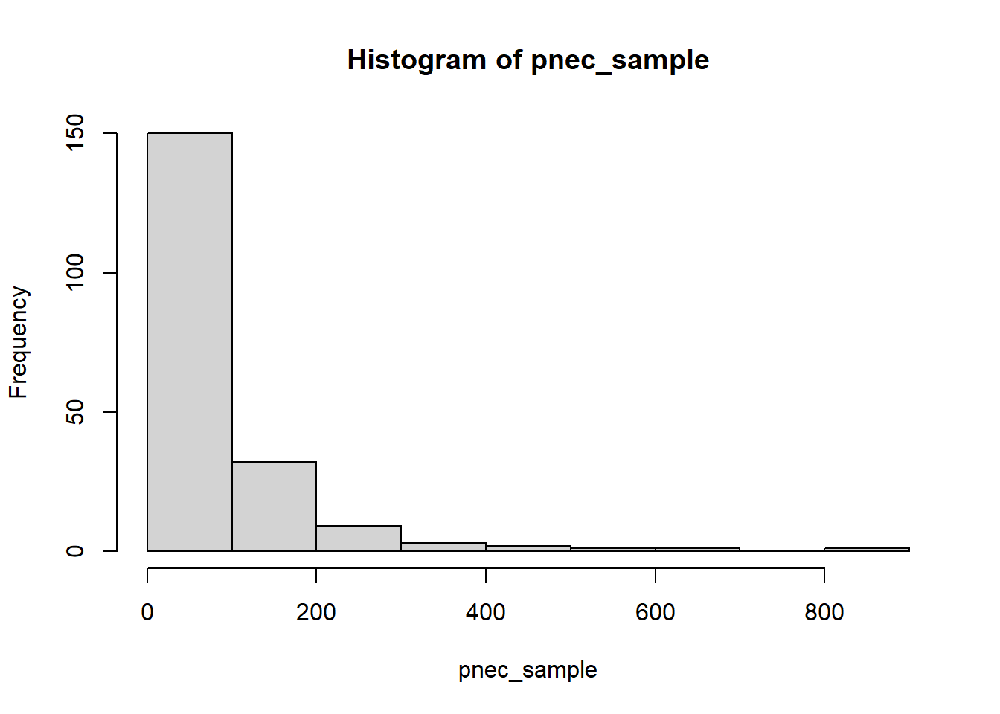

# Load required package
require("fitdistrplus")Loading required package: fitdistrplusWarning: package 'fitdistrplus' was built under R version 4.6.1Loading required package: MASSLoading required package: survivallibrary(fitdistrplus)# Load required package
require("fitdistrplus")Loading required package: fitdistrplusWarning: package 'fitdistrplus' was built under R version 4.6.1Loading required package: MASSLoading required package: survivallibrary(fitdistrplus)# Example data set
x = c(42,37,50,28,33,46,39,55,31,49,31,33,36,44,40.5,27,52,44.8,38,43,30,47,35,51)
x = rgamma(20,3,5)
hist(x) #ugly hist
# Fit distribution to data using maximum likelihood
fit1 <- fitdist(x,distr= "norm", method = "mle")# Generats plots comparising empirical cdf with fitted cdf, and histogram with fitted pdf
plot(fit1)
# Extract goodness of fit as an AIC-value
AIC(fit1)[1] 13.761# Extract the parameters for the fitted distribution. You use these values to sample or calculate things from the distribution
fit1$estimate mean sd
0.6222942 0.3088457 # For example, if the distribution is normal one can calculate the 95th percentile like this
qnorm(0.95,mean=fit1$estimate[1],sd=fit1$estimate[2])[1] 1.1303# Example data set
x = c(0.45, 0.08, 0.02, 0.001, 0.001, 0.01, 0.86, 0.006, 0.01, 0.26, 0.63, 0.20, 0.007, 0.73, 0.51, 0.002, 0.03, 0.38, 0.02, 0.04)
hist(x) #ugly hist
# Fit distribution to data using maximum likelihood
fit2 <- fitdist(x,distr= "beta", method = "mle")# Generates plots comparing empirical cdf with fitted cdf, and histogram with fitted pdf
plot(fit2)
# Extract goodness of fit as an AIC-value
AIC(fit2)[1] -36.1783# Extract the parameters for the fitted distribution. You use these values to sample or calculate things from the distribution
fit2$estimate shape1 shape2
0.3490547 1.2865326 # For example, if the distribution is beta one can generate 10 random numbers like this
rbeta(10,shape1=fit2$estimate[1],shape2=fit2$estimate[2]) [1] 3.892527e-02 2.327219e-01 4.934040e-01 1.204543e-01 7.149547e-02
[6] 6.309861e-02 6.439940e-05 3.271561e-01 9.073447e-05 2.181313e-01# Fit distribution to data using maximum likelihood
fit3 <- fitdist(x,distr= "gamma", method = "mle")# Generates plots comparing empirical cdf with fitted cdf, and histogram with fitted pdf
plot(fit3)
# Extract the parameters for the fitted distribution. You use these values to sample or calculate things from the distribution
fit3$estimate shape rate
0.4127028 1.9434447 # For example, if the distribution is beta one can generate 10 random numbers like this
rgamma(10,shape=fit3$estimate[1],rate=fit2$estimate[2]) [1] 0.009843817 0.235915970 0.209056711 0.358355289 0.063934735 0.055071276
[7] 0.023141403 2.317394986 0.238615992 0.002335998Look at plots and compare AIC-values (lower AIC is better)
# Extract goodness of fit as an AIC-value and compare the two candidate models. Lower AIC is better model
AIC(fit2) # beta[1] -36.1783AIC(fit3) # gamma[1] -33.53977In the examples above you use estimate parameters using maximum likelihood. This provides a point estimate. In the diclofenac, where the fitted probability distribution represents variability between sites, you want to have uncertainty in parameters as well. Thereare several options to fit distributions and get uncertainty in parameters.
If done in Bayesian framework, parameters would have been estimated with probability distributions. You are not expected to be able to do that in this course. To get uncertainty outside a Bayesian framework, one can use bootstrap. An alternative way is to using the information from the maximum likelihood estimation and assign a distribution based on that.
Bayesian - best but not required for this course
Bootstrap - a good alternative when there is enough data for resampling, captures correlation between parameters. Contact Ullrika if you want to do this
Assign distribution in parameters using ML estimation info. This approach is described below.
In fitdist you get the standard deviation of the estimated parameter. I suggest you use this to construct a probability distribution for the parameters. This is an ‘ad hoc’ method, but it is sufficient for the project.
fit4 <- fitdist(x,distr= "lnorm", method = "mle") For the lognormal distribution we have two parameters (mean and sd on the log scale).
fit4$estimate # the estimated values (central) meanlog sdlog
-3.135851 2.202322 fit4$sd # the standard deviation in the estimated values meanlog sdlog
0.4924541 0.3482173 We can use the normal distribution to represent uncertainty on the meanlog
meanlog_mean = fit4$estimate[1]
meanlog_sd = fit4$sd[1]
# random draw from the parameter distribution
rlnorm(1,meanlog_mean,meanlog_sd)[1] 0.05342969We can use a uniform distribution to represent uncertainty on the sdlog
sdlog_mean = fit4$estimate[2]
sdlog_sd = fit4$sd[2]
# random draw from the parameter distribution
runif(1,max(sdlog_mean-sdlog_sd,0),sdlog_mean+sdlog_sd)[1] 2.066226In case you work with a gamma distribution, consider that it has two parameters (shape and rate).
# Example with gamma
fit3 <- fitdist(x,distr= "gamma", method = "mle")
fit3$estimate # the estimated values (central) shape rate
0.4127028 1.9434447 fit3$sd # the standard deviation in the estimated values shape rate
0.1058674 0.8403148 These two parameter values are both strictly positive. if we select a probability distribution for them, we have to ensure that they are positive and not zero.
I suggest you describe uncertainty in these parameters using a probability distribution that is strictly positive as well. In the code below I use a lognormal distribution. First I transform the mean and sd of the estimated parameter to logscale and then put these into the lognormal distribution.
shape_mean = fit3$estimate[1]
shape_sd = fit3$sd[1]
shape_sigma = sqrt(log(1+(shape_sd/shape_mean)^2))
shape_mu=log(shape_mean)-shape_sigma^2/2
# random draw from the parameter distribution
rlnorm(1,shape_mu,shape_sigma)[1] 0.5414673rate_mean = fit3$estimate[2]
rate_sd = fit3$sd[2]
rate_sigma = sqrt(log(1+(rate_sd/rate_mean)^2))
rate_mu=log(rate_mean)-rate_sigma^2/2
# random draw from the parameter distribution
rlnorm(1,rate_mu,rate_sigma)[1] 1.549783Let us say that X follows a distribution
To calculate the probability that X is greater than a value \(x_0\), i.e. \(P(X>x_0)\) one use the probability function for the complementary event.
\[P(X>x_0) = 1-P(X\leq x_0)\]
# example with normal distribution
mean=3
sd=1
x0 = 2
1-pnorm(x0,mean,sd)[1] 0.8413447Information about the predict function can be found on this page ssd_hc.fitdists
library(ssdtools)Warning: package 'ssdtools' was built under R version 4.6.1library(readr)Warning: package 'readr' was built under R version 4.6.1# read dataset
data <- read_csv("../data/metolachlor_ssd.csv") # make sure Conc is numericRows: 6 Columns: 10
── Column specification ────────────────────────────────────────────────────────
Delimiter: ","
chr (8): Genus, Group, Life_stage, Notes, Phylum, Species, Test_endpoint, To...
dbl (2): Conc, Duration
ℹ Use `spec()` to retrieve the full column specification for this data.
ℹ Specify the column types or set `show_col_types = FALSE` to quiet this message.# fit distributions
dist <- ssd_fit_dists(data, left = 'Conc', dists = c('gamma', 'lgumbel', 'llogis', 'lnorm', 'lnorm_lnorm', 'weibull'), silent = TRUE, reweight = FALSE, min_pmix = 0, nrow = 6L, computable = TRUE, at_boundary_ok = FALSE, rescale = TRUE)
# derive hazardous concentration for fraction 0.05 by inverting the model. Use bootstrap to get uncertainty in hazardous concentration.
pred <- ssd_hc(dist, proportion=0.05, average = TRUE, ci = TRUE, nboot = 200, min_pboot = 0.2,samples = TRUE)Warning: package 'future' was built under R version 4.6.1Warning: package 'purrr' was built under R version 4.6.1pnec_sample <- unlist(pred$samples) # using an uncertainty factor of 1, the hazardous concentration is the PNEC
hist(pnec_sample)